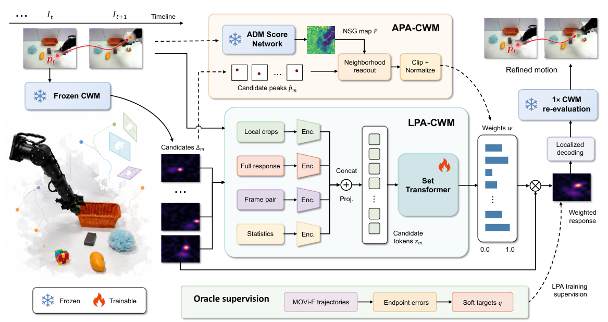

Multiple views of motion
Compare factual and intervened predictions under different target-frame masks to construct candidate responses.
A Learned Physical Adjudicator for Motion Reasoning with Counterfactual World Models
A frozen world model generates possibilities. A learned adjudicator identifies the responses worth trusting.
From uniform aggregation
to learned physical adjudication.
Different target-frame masks produce motion responses with different levels of reliability. Averaging them equally can dilute the evidence that matters.
LPA-CWM compares an unordered set of candidates and learns relative reliability weights. The predictor and intervention generator stay frozen; only the lightweight adjudicator is trained.
Learn to rank counterfactual evidence using visual context and response structure, then recover motion through localized decoding.

Compare factual and intervened predictions under different target-frame masks to construct candidate responses.
A Set Transformer jointly compares local RGB, response shape, frame-pair context, and candidate statistics.
Weighted responses undergo windowed localization and one paired CWM re-evaluation to recover the final motion.
LPA-CWM tracks multiple points across eight tasks, with three episodes per task.
Direct cross-dataset evaluation on DAVIS, Kinetics, and RoboTAP, without dataset-specific adaptation.
Relative improvement = (LPA − Uniform) / Uniform × 100%. Each card uses the representative CMC metric for that dimension; raw scores are percentages.
| Dataset | Method | CMC (Ours) | TAP-Vid First | ||||||||||
|---|---|---|---|---|---|---|---|---|---|---|---|---|---|
| Cov. ↑ | C@.8 ↑ | DCA ↑ | CTS ↑ | VisBA ↑ | OF1 ↑ | LCC ↑ | AJ ↑ | < δavgx ↑ | AD ↓ | MD ↓ | OA ↑ | ||
| DAVIS | SMURF | 91.98 | 85.54 | 11.25 | 2.67 | 56.64 | 14.92 | 83.29 | 7.39 | 14.34 | 32.34 | 30.06 | 78.14 |
| GMRW | 37.02 | 20.62 | 23.92 | 17.00 | 63.24 | 45.22 | 35.46 | 21.85 | 41.55 | 20.59 | 13.38 | 50.77 | |
| DODUO | 31.44 | 15.04 | 22.25 | 14.42 | 58.94 | 45.83 | 28.44 | 26.15 | 52.49 | 8.79 | 2.90 | 49.46 | |
| CoTracker3 | 92.31 | 85.33 | 71.81 | 70.50 | 76.43 | 58.97 | 81.01 | 62.90 | 76.81 | 4.20 | 2.01 | 86.11 | |
| RAFT | 68.74 | 49.58 | 49.00 | 31.77 | 70.16 | 41.66 | 62.02 | 37.08 | 58.79 | 15.83 | 5.60 | 69.86 | |
| SEA-RAFT | 57.76 | 31.25 | 47.39 | 42.50 | 65.78 | 39.56 | 54.07 | 40.72 | 51.84 | 19.17 | 7.78 | 65.22 | |
| Uniform CWM | 88.10 | 80.96 | 36.87 | 21.46 | 59.91 | 33.91 | 85.20 | 24.31 | 40.21 | 13.10 | 3.98 | 76.56 | |
| APA-CWM (Ours) | 94.74 | 89.98 | 55.79 | 47.91 | 62.07 | 38.48 | 90.13 | 41.73 | 57.35 | 10.27 | 2.94 | 83.47 | |
| LPA-CWM (Ours) | 98.21 | 95.63 | 58.98 | 57.54 | 75.89 | 48.14 | 93.18 | 45.29 | 63.92 | 6.73 | 2.07 | 84.18 | |
| Kinetics | SMURF | 89.67 | 81.89 | 19.16 | 14.17 | 62.69 | 35.11 | 82.40 | 17.28 | 29.43 | 27.67 | 20.56 | 70.48 |
| GMRW | 55.28 | 36.25 | 32.38 | 30.42 | 65.99 | 46.34 | 51.43 | 29.83 | 48.48 | 17.87 | 12.13 | 53.52 | |
| DODUO | 67.04 | 49.87 | 40.21 | 39.87 | 78.37 | 58.39 | 59.83 | 36.89 | 46.32 | 13.80 | 4.15 | 67.69 | |
| CoTracker3 | 87.06 | 79.67 | 50.15 | 46.61 | 78.00 | 58.56 | 80.41 | 50.86 | 63.21 | 9.85 | 3.60 | 84.80 | |
| RAFT | 80.83 | 69.24 | 44.89 | 43.94 | 74.93 | 60.72 | 71.71 | 37.65 | 47.67 | 18.20 | 4.00 | 80.52 | |
| SEA-RAFT | 78.59 | 65.73 | 43.36 | 40.71 | 72.67 | 51.96 | 70.65 | 37.88 | 47.65 | 18.61 | 3.71 | 79.45 | |
| Uniform CWM | 87.14 | 77.11 | 40.26 | 34.54 | 67.66 | 44.97 | 79.95 | 35.44 | 46.62 | 15.26 | 7.44 | 85.99 | |
| APA-CWM (Ours) | 89.08 | 83.78 | 46.22 | 37.10 | 77.66 | 59.22 | 84.60 | 35.66 | 47.40 | 12.15 | 4.01 | 87.19 | |
| LPA-CWM (Ours) | 94.65 | 89.97 | 51.92 | 58.25 | 82.97 | 62.67 | 86.84 | 41.91 | 53.12 | 10.87 | 3.45 | 88.96 | |
| RoboTAP | SMURF | 90.33 | 81.38 | 21.13 | 11.67 | 57.17 | 28.66 | 78.28 | 27.03 | 42.56 | 23.89 | 15.91 | 75.68 |
| GMRW | 30.31 | 10.89 | 18.41 | 7.01 | 61.48 | 35.21 | 28.76 | 20.83 | 34.73 | 23.49 | 13.76 | 47.69 | |
| DODUO | 52.31 | 30.82 | 31.93 | 18.73 | 73.28 | 53.09 | 47.15 | 40.71 | 56.52 | 9.86 | 3.85 | 69.92 | |
| CoTracker3 | 81.02 | 73.92 | 51.40 | 43.05 | 73.11 | 59.35 | 75.21 | 56.58 | 71.79 | 11.21 | 1.96 | 80.14 | |
| RAFT | 76.69 | 54.71 | 49.10 | 41.27 | 70.60 | 44.27 | 69.46 | 45.57 | 57.69 | 13.06 | 3.21 | 72.00 | |
| SEA-RAFT | 75.58 | 62.14 | 42.45 | 24.68 | 65.23 | 37.86 | 64.72 | 47.38 | 61.93 | 12.04 | 2.61 | 77.62 | |
| Uniform CWM | 85.92 | 79.06 | 42.57 | 30.55 | 72.12 | 50.77 | 76.89 | 38.26 | 51.01 | 8.68 | 3.52 | 80.85 | |
| APA-CWM (Ours) | 91.10 | 81.78 | 46.91 | 42.34 | 75.63 | 57.44 | 78.71 | 43.17 | 56.90 | 7.88 | 2.88 | 83.24 | |
| LPA-CWM (Ours) | 92.00 | 86.88 | 50.26 | 54.22 | 78.03 | 61.00 | 85.49 | 47.42 | 58.35 | 7.74 | 2.75 | 86.45 | |
Table 1. Cross-dataset evaluation. CMC metrics are percentages. Under TAP-Vid First, AJ, < δavgx, and OA are percentages; AD and MD are pixels. Bold marks the best of the three CWM variants. Gray cells mark stronger external results. ↑ Higher is better. ↓ Lower is better.
Ablations under CMC and TAP-Vid First isolate the contributions of the adjudicator, supervision, and decoding.
Code, trained weights, and evaluation resources are being prepared.
Resources will be shared here at release.
A provisional citation while the paper is under double-blind review.
@unpublished{anonymous2027lpacwm,
title = {LPA-CWM: A Learned Physical Adjudicator for Motion
Reasoning with Counterfactual World Models},
author = {Anonymous Authors},
year = {2027},
note = {Under review at ICLR. Provisional citation.}
}This is a placeholder citation, not a published record. Final bibliographic details will follow.